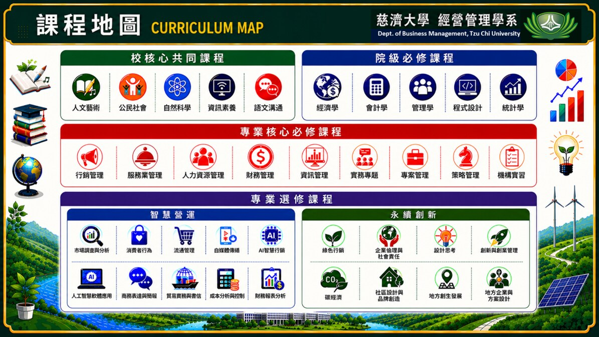
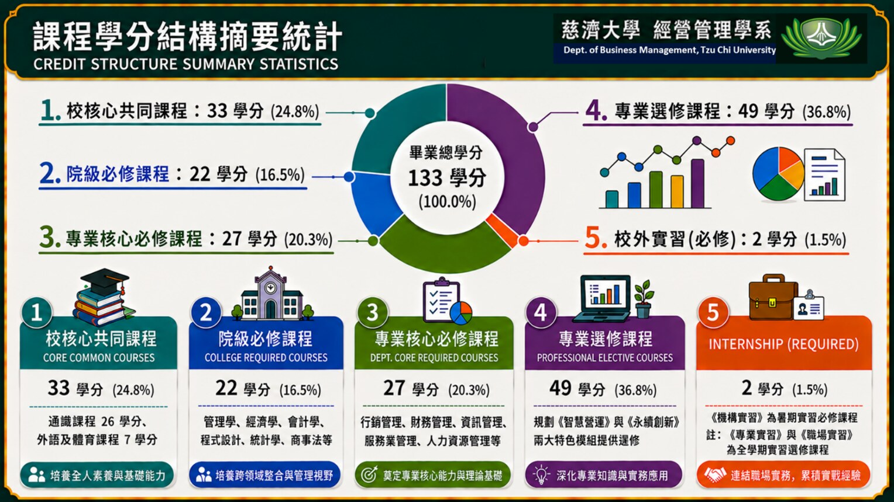
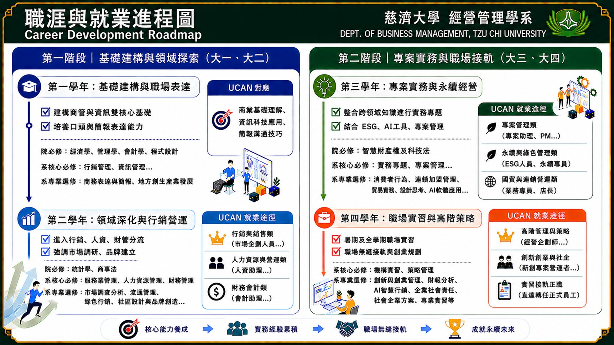

校核心共同課程
人文藝術、公民社會、自然科學、資訊素養、語文溝通。
ACADEMICS
從課程地圖、畢業學分結構到職涯發展，了解本系的學習規劃。

人文藝術、公民社會、自然科學、資訊素養、語文溝通。
經濟學、會計學、管理學、程式設計、統計學。
行銷管理、服務業管理、人力資源管理、財務管理、資訊管理、實務專題、專案管理、策略管理、機構實習。

通識課程 26 學分；外語及體育課程 7 學分。
培養全人素養與基礎能力管理學、經濟學、會計學、程式設計、統計學、商事法等。
培養跨領域整合與管理視野行銷管理、財務管理、資訊管理、服務業管理、人力資源管理等。
奠定專業核心能力與理論基礎規劃「智慧營運」與「永續創新」兩大特色模組提供選修。
深化專業知識與實務應用機構實習為暑期實習必修課程；「專業實習」與「職場實習」為全學期實習選修課程。
連結職場實務，累積實戰經驗原圖以「校外實習（必修）」作為類別說明；此處統一採正式課程名稱「機構實習」。

培養重點：建構商管與資訊雙核心基礎；培養口頭與簡報表達能力。
課程方向：院必修為經濟學、管理學、會計學、程式設計；系核心必修包含行銷管理、資訊管理等；專業選修包含商務表達與簡報、地方創生產業發展。
UCAN 對應：商業基礎理解、資訊科技應用、簡報溝通技巧。
培養重點：進入行銷、人資、財管分流；強調市場調研、品牌建立。
課程方向：院必修為統計學、商事法；系核心必修包含服務業管理、人力資源管理、財務管理；專業選修包含市場調查分析、流通管理、綠色行銷、社區設計與品牌創造等。
UCAN 就業途徑：行銷與銷售類（市場企劃人員等）、人力資源與營運類（人資助理等）、財務會計類（會計助理等）。
培養重點：整合跨領域知識進行實務專題；結合 ESG、AI 工具與專案管理。
課程方向：院必修為智慧財產權及科技法；系核心必修包含實務專題、專案管理等；專業選修包含消費者行為、連鎖加盟管理、貿易實務、設計思考、AI 軟體應用等。
UCAN 就業途徑：專案管理類（專案助理、PM 等）、永續與綠色管理類（ESG 人員、永續專員）、國貿與連鎖營運類（業務專員、店長）。
培養重點：暑期及全學期職場實習；職場無縫接軌與創業規劃。
課程方向：系核心必修包含機構實習、策略管理；專業選修包含創新與創業管理、財報分析、AI 智慧行銷、企業社會責任、社會企業方案、專業實習等。
UCAN 就業途徑：高階管理與策略（經營企劃師等）、創新創業與社企（新創事業營運者等）、實習接軌正職（圖中列示為直達轉任正式員工）。